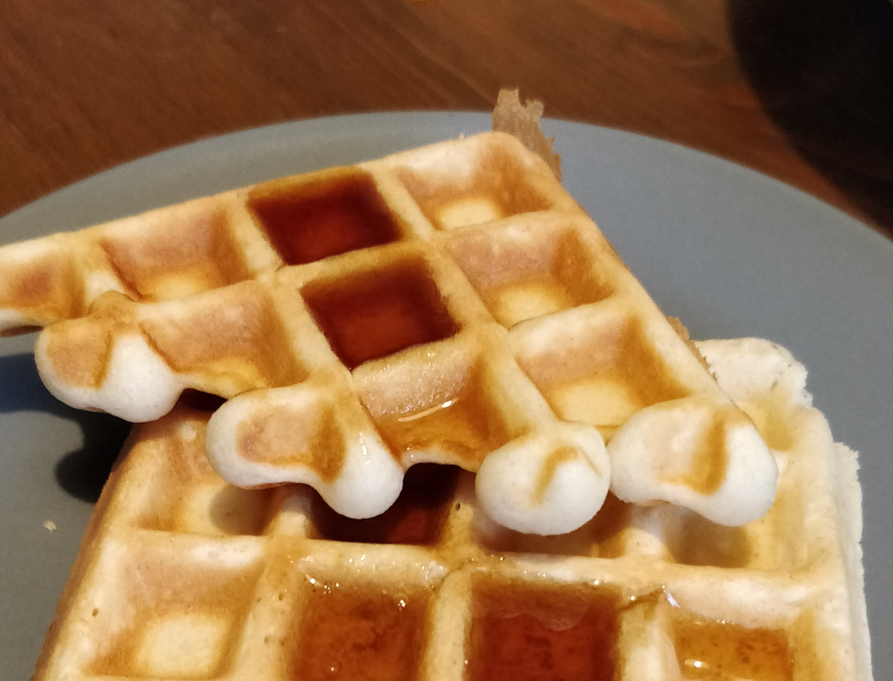

Waffle Batter★
 Vegetarian/Vegan
Vegetarian/Vegan
Best served with fried chicken and maple syrup

350gall-purpose flour4 tbspsugar1 tbspbaking powder1/4 tspsalt190mlmilk1 tbsplemon juice2large eggs1/2 tspvanilla extract110gbutter, melted
Mix milk and lemon juice and let sit for 10 mins until starting to thicken/curdle
Preheat waffle iron.
In a large mixing bowl, stir together flour, sugar, baking powder, and salt.
Pour in milk mixture, eggs, vanilla extract, and melted butter. Stir until well combined. Mixture should be thick and viscous.
Cook in a preheated waffle maker using 1/2 cup of batter per waffle.
Serve hot with syrup, fresh berries, and/or whipped cream